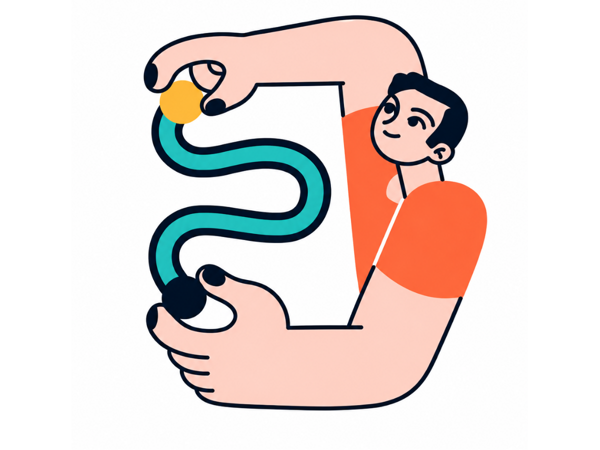

Smart DT
Project
English
A
Hello,
Student
! 👋
Let's keep building
smarter
solutions.
You're doing great! Continue your Design Thinking journey.

Current Project
0
%
Overall DT Progress
✏️
—
In Progress
Started today
Continue Current Phase
You are in
Phase 01 · Empathy
0
Phases Done
1
Days Active
5
Phases Left
🗺 DT Journey Map
📖 DT Glossary
📋
Continue Current Phase
Start Phase 01 · Empathy
›
👨🏫
Supervisor Feedback
Check approval status of your phases
›
👥
My Profile & Team
View your details and team info
›
✏️
Edit My Details
Update name, class, team or supervisor
›
+
Welcome
Home
Learn
Progress
Profile
📖 DT Glossary
✕
🗺 DT Journey Map
✕
🧠 Phase 01 — Empathy
Interview real users. Build an empathy map. Discover what they truly need.
Output → Empathy Map + Key Insights
↓
🎯 Phase 02 — Define
Write a POV statement using your empathy insights. Frame HMW questions.
Output → Problem Statement + HMW Questions
⭐ Gate 1 — Supervisor Review
💡 Phase 03 — Ideation
Brainstorm 10+ ideas. Use SCAMPER. Select the best idea with rationale.
Output → 10 Ideas + Selected Solution
⭐ Gate 2 — Supervisor Review
🔧 Phase 04 — Prototype
Build a low-fidelity prototype. Document steps and attach evidence photos.
Output → Prototype + Evidence
↓
🧪 Phase 05 — Test
Test with 3+ real users. Record findings. List improvements to make.
Output → Test Report + Improvement Plan
⭐ Gate 3 — Final Supervisor Review
Close